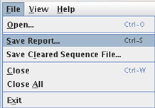

The SUGAR generates an HTML file of the report showing the results ofanalyses for a permanent record. The HTML report can also be generated in non-interactive command line mode.
To save the report, select "File > Save Report" from the main menu. By a default setting, zip-compressed report file will be created using the name of original data file with adding a new suffix '_hrqc.zip' to the end of the file name. The report saving action is applied for the activated file tab (not for all of the tabs).

Uncompressing the zip report file generates a folder containing a series of sub-folders and files. To browse the report, open the file named 'sugar_report.html' by web bowser softwares (Internet Explorer, Firefox, Safari, etc.).